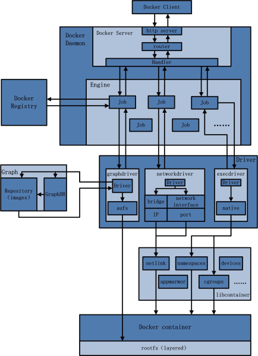

Docker笔记-介绍
Docker 能做什么，与虚拟机区别：
与虚拟机区别， 每个虚拟机是一个操作系统。docker 是操作系统上的应用。
- 环境打包成镜像，自动化运行容器，打包部署自动化。
- 创建轻量，私密的PAAS环境。
- 实现自动化测试和持续的集成/部署。
- 部署与扩展webapp,数据库和后台服务。
- 完全沙箱机制。
| 项目 | 传统虚拟机 | Docker虚拟机 |
|---|---|---|
| 占用空间 | 大 | 小 |
| 启动速度 | 慢 | 快 |
| 资源利用率 | 低 | 高 |
| 运行基础 | Hypervisor CPU虚拟化技术 | Linux内核虚拟化 |
| 部署 | 复杂 | 方便 |
| 隔离 | 操作系统级别 | 容器级别 基于namespace隔离 |
| 相互通信 | 简单造作系统间通信 | 复杂 容器间通信 |
Docker组成：
- Docker Client 客户端：通过API访问Docker Daemon 管理Docker镜像。
- Docker Daemon 守护进程：负责Docker镜像的创建，删除，启动，停止等服务。
- Docker Image镜像：“只读”系统。
- Docker Container 容器 Docker images的仓库 Docker Hub dockerhub.com
基础概念
镜像（Image）:
特殊文件系统，除了提供容器运行时所需的程序，库，资源，配置文件外，还包含配置参数（匿名卷，环境变量，用户等）。不包含然和动态数据。构建之后也不会改变。
镜像构建时，会一层层构建，前一层是后一层基础。容器（Container）:
镜像运行的实体，可以被创建，停止，访问，删除等。仓库（Repository）：
每个仓库可包含多个标签（Tag）:每个标签对应一个镜像。
